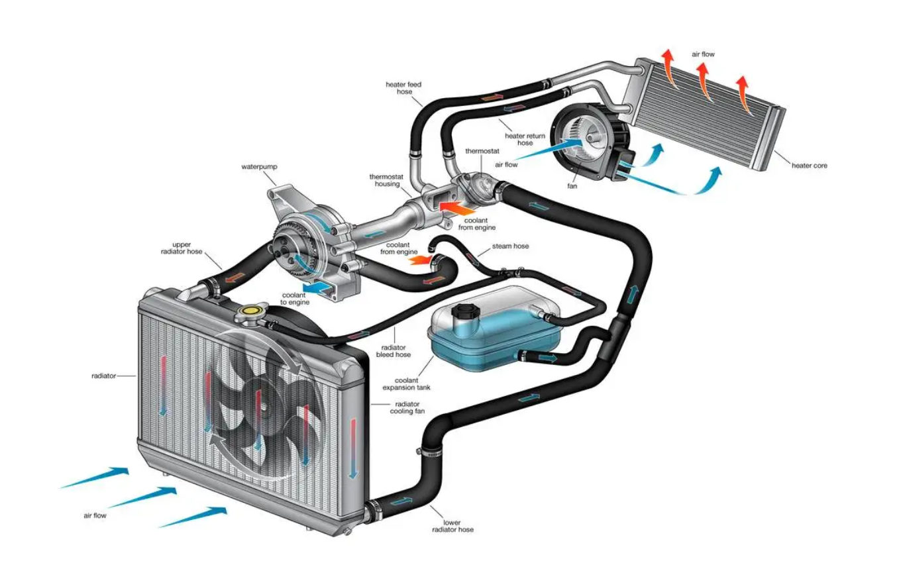
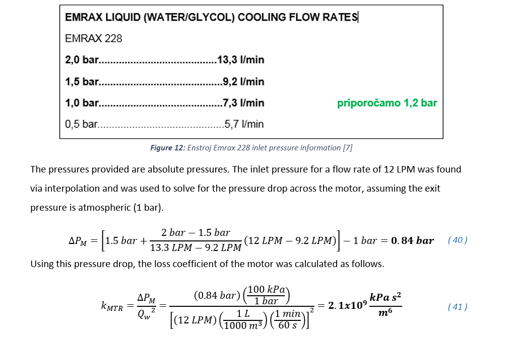
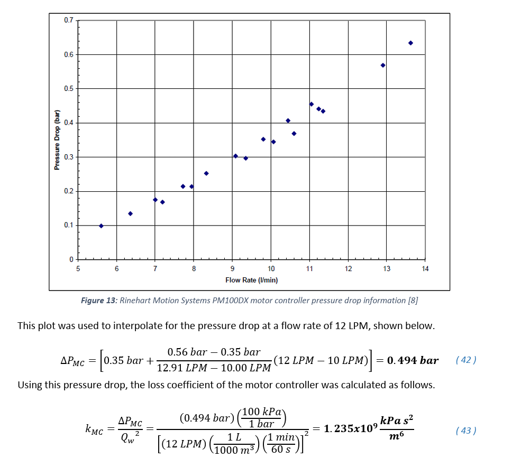
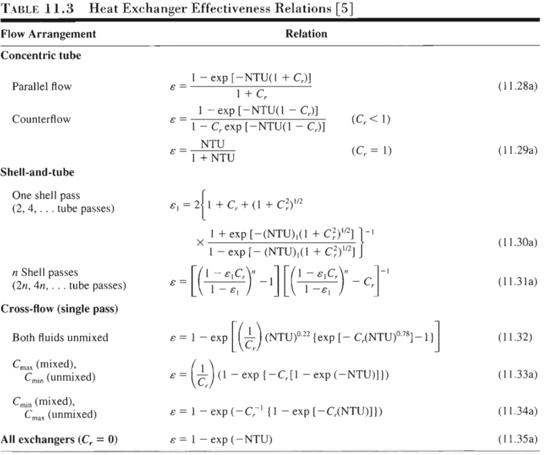

Cooling Calculations
This project rebuilds Aztec Electric Racing’s cooling-system calculations by analyzing the hydraulic and thermal sides of the loop together. The goal is to move beyond previous simplified calculations and create a spreadsheet-based tool that can help the team estimate pressure losses, pump flow rate, radiator performance, and future cooling-system design decisions.

Problem
Previous years’ cooling calculations used the Hazen-Williams loss coefficient, which is not recommended for small-pipe flow. The older calculation approach also focused mainly on the hydraulic side of the cooling system, without fully connecting the pressure-loss analysis to the thermal performance of the radiator.
For the upcoming year, the cooling system needs a more complete analysis method. Aztec Electric Racing’s cooling loop has heat-generating components, heat-rejecting components, pump head rise, tubing losses, fitting losses, and radiator losses that all influence the final flow rate and system performance.
System Overview
The cooling system has both a hydraulic component and a thermal component. The motor and inverter generate heat through losses and must be cooled so they can continue operating reliably. The radiator acts as a compact heat exchanger, rejecting heat from the water as it moves through the loop.
On the fluids side, the pump provides head rise while the tubing, fittings, motor, inverter, and radiator create head losses. These two sides of the problem are connected: the system must pump enough fluid through the loop, but the water also needs enough time and radiator effectiveness to reject heat. This makes pump flow rate and radiator selection a coupled design problem.
Mechanical Energy Equation
The hydraulic side starts with the mechanical energy equation. In a cooling loop, this equation tracks pressure head, velocity head, elevation head, pump head rise, and head losses from one point in the loop to another.
- \(p_1, p_2\): pressure at points 1 and 2.
- \(\rho\): fluid density.
- \(g\): gravitational acceleration.
- \(v_1, v_2\): fluid velocity at points 1 and 2.
- \(z_1, z_2\): elevation at points 1 and 2.
- \(h_p\): pump head rise added to the system.
- \(h_L\): total head loss from tubing, fittings, and components.
Multiplying head by \( \rho g \) converts the result into pressure. This is useful because many component losses can be compared as pressure drops across the cooling loop.
Major and Minor Losses
The spreadsheet separates losses into major and minor head losses. Major losses come from friction as fluid moves through tubing. Minor losses come from fittings, bends, transitions, and other inconsistencies in the loop.
- \(h_f\): major head loss from pipe or tube friction.
- \(f\): Darcy friction factor.
- \(L\): tube or pipe length.
- \(D\): tube or pipe diameter.
- \(v\): average fluid velocity.
- \(g\): gravitational acceleration.
- \(h_m\): minor head loss from fittings, bends, transitions, or components.
- \(K\): minor loss coefficient.
- \(v\): average fluid velocity through the section.
- \(g\): gravitational acceleration.
Friction Factor and Reynolds Number
Flow speed is found from the flow-rate relationship:
- \(Q\): volumetric flow rate.
- \(v\): average fluid velocity.
- \(A\): cross-sectional flow area.
The Reynolds number is then calculated to determine whether the section is laminar or turbulent:
- \(Re\): Reynolds number.
- \(\rho\): fluid density.
- \(v\): average fluid velocity.
- \(D\): hydraulic diameter or tube diameter.
- \(\mu\): dynamic viscosity.
The Moody diagram is commonly used to find the friction factor, but the Colebrook equation behind it is implicit because \(f\) appears on both sides:
- \(f\): Darcy friction factor.
- \(\varepsilon\): pipe or tube roughness.
- \(D\): tube diameter.
- \(Re\): Reynolds number.
Since that is not convenient for this Excel model, the sheet uses the Blasius equation for turbulent flow:
If the flow is not turbulent, the spreadsheet switches to the laminar friction-factor equation:
How the Spreadsheet Handles Hydraulic Losses
The Excel sheet is formatted so that the user inputs flow rate, diameter, length, and whether the section is hot, cold, or unknown. Since fluid properties depend on temperature, the calculations pull adjusted properties from the FLUIDS ASSUMED CONSTANTS tab.
Once the section properties are known, the spreadsheet calculates velocity, Reynolds number, friction factor, and head loss for each section. Minor loss coefficients are based on reference graphs from Fundamentals of Fluid Mechanics by Munson et al., then applied using the minor loss equation.
Component Losses
In addition to tubing and fitting losses, the cooling loop includes losses across the motor, inverter, and radiator. For the motor and inverter, loss coefficients are based on University of Akron research into pressure losses across those components.


Those coefficients were given in units of \( \text{kPa}\cdot s^2/m^6 \), so they had to be converted by dividing by \( \rho g \), converting to imperial units, and multiplying by flow rate squared to find the corresponding head loss.
- \(h_{\text{component}}\): component head loss.
- \(K_{\text{component}}\): component loss coefficient after unit conversion.
- \(Q\): volumetric flow rate.
The third major unknown is the radiator loss. That value will be measured using the Cooling Test Bench currently being designed and built. This will provide more accurate pressure-loss data for the current radiator and any future radiator candidates.
Learning the Heat Exchanger Model
By the end of the Spring 2026 semester, I had not yet taken thermodynamics or heat transfer, so most of my background came from Physics III and independent research. After looking through FSAE resources, I found that Fundamentals of Heat and Mass Transfer by Bergman et al. is widely used for this type of analysis.
I purchased a copy of the book and focused on the heat exchanger chapter to understand how the radiator could be modeled as a compact heat exchanger.
Energy Balance
The governing heat transfer relationship compares heat lost by the hot fluid to heat gained by the cold fluid:
- \(\dot{q}\): heat transfer rate.
- \(\dot{m}_h, \dot{m}_c\): hot-side and cold-side mass flow rates.
- \(c_{p,h}, c_{p,c}\): hot-side and cold-side specific heat values.
- \(T_{h,in}, T_{h,out}\): hot fluid inlet and outlet temperatures.
- \(T_{c,in}, T_{c,out}\): cold fluid inlet and outlet temperatures.
This can also be rewritten using the heat capacity rate:
- \(C\): heat capacity rate.
- \(C_h, C_c\): hot-side and cold-side heat capacity rates.
Overall Heat Transfer Coefficient
A radiator is not just direct heat transfer between two fluids. Heat must move from the water to the tube wall, through the aluminum, into the fins, and finally into the air moving across the radiator. Because of this, the analysis uses the overall heat transfer coefficient, \(U\), which combines the main thermal resistances in the system.
- \(R_{total}\): total thermal resistance of the heat exchanger path.
- \(U\): overall heat transfer coefficient.
- \(A\): heat transfer area.
- \(\eta_{o,c}, \eta_{o,h}\): overall surface efficiencies on the cold and hot sides.
- \(h_c, h_h\): convection heat transfer coefficients on the cold and hot sides.
- \(A_c, A_h\): cold-side and hot-side surface areas.
- \(R_{f,c}, R_{f,h}\): cold-side and hot-side fouling factors.
- \(R_{wall}\): wall conduction resistance through the radiator material.
Surface efficiency is important because the louvered fins do not transfer heat perfectly. Overall surface efficiency accounts for how much of the total surface area is finned and how effective those fins are:
- \(\eta_o\): overall surface efficiency.
- \(A_f\): fin surface area.
- \(A\): total heat transfer surface area.
- \(\eta_f\): fin efficiency.
Fin efficiency compares the actual fin heat transfer rate to the maximum possible fin heat transfer rate:
- \(\eta_f\): fin efficiency.
- \(\dot{q}_{fin,actual}\): actual heat transfer rate through the fin.
- \(\dot{q}_{fin,max}\): maximum possible fin heat transfer rate if the whole fin were at the ideal base temperature.
I plan to estimate these values using ANSYS Fluent by comparing actual radiator fin behavior to an idealized high-conductivity case. This makes the Radiator CAD Model important because the accuracy of the geometry affects the thermal analysis.
NTU and Effectiveness
Once \(UA\) is found, the next step is the Number of Transfer Units method. NTU is defined as:
- \(NTU\): number of transfer units.
- \(U\): overall heat transfer coefficient.
- \(A\): heat transfer area.
- \(C_{min}\): smaller heat capacity rate between the hot and cold fluids.
The heat capacity rate ratio is:
- \(C_r\): heat capacity rate ratio.
- \(C_{min}\): smaller heat capacity rate.
- \(C_{max}\): larger heat capacity rate.
- \(\dot{m}\): mass flow rate.
- \(c_p\): specific heat.
For the chosen radiator flow configuration, heat exchanger effectiveness is found from the appropriate table or relationship using \(NTU\) and \(C_r\). In other words, effectiveness is a function of both values:

After \(NTU\) and \(C_r\) are known, Table 11.3 is used to determine the heat exchanger effectiveness, \(\varepsilon\). Effectiveness compares the actual heat transfer rate to the maximum possible heat transfer rate:
- \(\varepsilon\): heat exchanger effectiveness.
- \(\dot{q}\): actual heat transfer rate.
- \(\dot{q}_{max}\): maximum possible heat transfer rate.
- \(C_{min}\): smaller heat capacity rate.
- \(T_{h,in}\): hot-side inlet temperature.
- \(T_{c,in}\): cold-side inlet temperature.
From there, the goal is to solve for temperature change and heat transfer rate across varying car speeds and water flow rates. This should help the team identify an optimal pump speed based on the average speed of the car and could eventually support active pump-speed control as a future project.
Status
This project is currently in progress. The next major steps are to collect radiator pressure-loss values from the cooling test bench and regain access to an ANSYS license for the upcoming year. Updates will be added as the analysis develops.
References Used
- Munson, Bruce R., Donald F. Young, Theodore H. Okiishi, and Wade W. Huebsch. Fundamentals of Fluid Mechanics. 6th ed., John Wiley & Sons, 2009.
- Bergman, Theodore L., Adrienne S. Lavine, Frank P. Incropera, and David P. DeWitt. Fundamentals of Heat and Mass Transfer. 7th ed., John Wiley & Sons, 2011.
- University of Akron published research on MErax 228 motor and PM100DX inverter pressure losses.
- Airside heat transfer coefficient reference: IntechOpen compact heat exchanger / louvered-fin heat transfer reference.
- Cooling Test Bench project for planned radiator pressure-loss testing.
- AER Radiator CAD Model project for radiator geometry used in future thermal analysis.
- Published Google Sheet cooling calculation workbook embedded above.